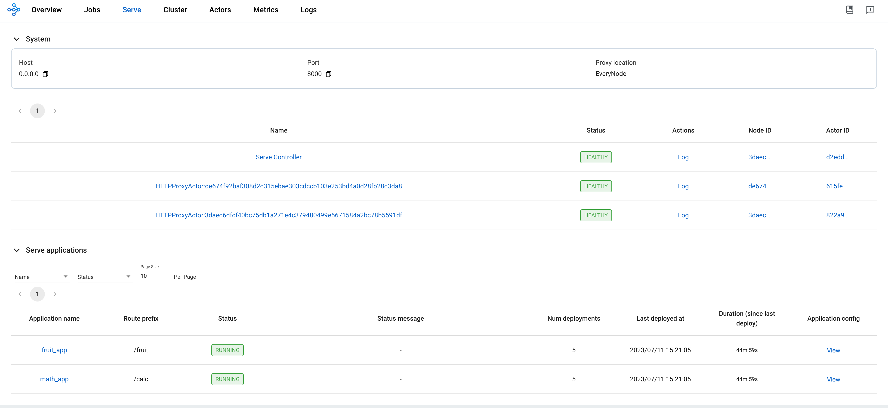

RayService 快速入门
Contents
RayService 快速入门#
先决条件#
本指南仅重点介绍 Ray Serve 多应用程序 API，该 API 从 Ray 版本 2.4.0 开始提供。
Ray 2.4.0 或更高版本。
KubeRay 0.6.0、KubeRay nightly 或更高版本。
什么是 RayService？#
RayService 管理这些组件：
RayCluster: 管理 Kubernetes 集群中的资源。
Ray Serve 应用程序: 管理用户的应用程序。
RayService 提供什么？#
对 Ray 集群和 Ray Serve 应用程序的 Kubernetes 原生支持: 使用 Kubernetes 配置定义 Ray 集群及其 Ray Serve 应用程序后，您可以用
kubectl创建集群及其应用程序。Ray Serve 应用程序就地更新 请参阅 RayService 了解更多详细信息。
Ray集群零停机升级: 请参阅 RayService 了解更多详细信息。
高可用服务: 请参阅 RayService 了解更多详细信息。
示例: 使用 RayService 为两个简单的 Ray Serve 应用程序提供服务#
步骤 1: 使用 Kind 创建 Kubernetes 集群#
kind create cluster --image=kindest/node:v1.23.0
步骤 2: 安装 KubeRay Operator#
按照 本文档 通过 Helm 存储库安装最新的稳定 KubeRay Operator。
请注意，本示例中的 YAML 文件使用 serveConfigV2 指定多应用程序 Serve 配置，从 KubeRay v0.6.0 开始支持该配置。
步骤 3: 安装 RayService#
# 步骤 3.1: Download `ray_v1alpha1_rayservice.yaml`
curl -LO https://raw.githubusercontent.com/ray-project/kuberay/v1.0.0-rc.0/ray-operator/config/samples/ray_v1alpha1_rayservice.yaml
# 步骤 3.2: Create a RayService
kubectl apply -f ray_v1alpha1_rayservice.yaml
步骤 4: 验证 Kubernetes 集群状态#
# 步骤 4.1: List all RayService custom resources in the `default` namespace.
kubectl get rayservice
# [Example output]
# NAME AGE
# rayservice-sample 2m42s
# 步骤 4.2: List all RayCluster custom resources in the `default` namespace.
kubectl get raycluster
# [Example output]
# NAME DESIRED WORKERS AVAILABLE WORKERS STATUS AGE
# rayservice-sample-raycluster-6mj28 1 1 ready 2m27s
# 步骤 4.3: List all Ray Pods in the `default` namespace.
kubectl get pods -l=ray.io/is-ray-node=yes
# [Example output]
# ervice-sample-raycluster-6mj28-worker-small-group-kg4v5 1/1 Running 0 3m52s
# rayservice-sample-raycluster-6mj28-head-x77h4 1/1 Running 0 3m52s
# 步骤 4.4: List services in the `default` namespace.
kubectl get services
# NAME TYPE CLUSTER-IP EXTERNAL-IP PORT(S) AGE
# ...
# rayservice-sample-head-svc ClusterIP 10.96.34.90 <none> 10001/TCP,8265/TCP,52365/TCP,6379/TCP,8080/TCP,8000/TCP 4m58s
# rayservice-sample-raycluster-6mj28-head-svc ClusterIP 10.96.171.184 <none> 10001/TCP,8265/TCP,52365/TCP,6379/TCP,8080/TCP,8000/TCP 6m21s
# rayservice-sample-serve-svc ClusterIP 10.96.161.84 <none> 8000/TCP 4m58s
当 Ray Serve 应用程序正常运行并准备就绪时，KubeRay 会为 RayService 自定义资源创建一个头服务和一个 Ray Serve 服务。例如步骤 4.4 中的 rayservice-sample-head-svc 和 rayservice-sample-serve-svc。
步骤 5: 验证服务应用程序的状态#
# (1) Forward the dashboard port to localhost.
# (2) Check the Serve page in the Ray dashboard at http://localhost:8265/#/serve.
kubectl port-forward svc/rayservice-sample-head-svc --address 0.0.0.0 8265:8265
参考 rayservice-troubleshooting.md 了解更多 RayService 可观测性。 下面是 Ray 仪表板中服务页面的屏幕截图示例。 
步骤 6: Send requests to the Serve applications via the Kubernetes serve service#
# 步骤 6.1: Run a curl Pod.
# If you already have a curl Pod, you can use `kubectl exec -it <curl-pod> -- sh` to access the Pod.
kubectl run curl --image=radial/busyboxplus:curl -i --tty
# 步骤 6.2: Send a request to the fruit stand app.
curl -X POST -H 'Content-Type: application/json' rayservice-sample-serve-svc:8000/fruit/ -d '["MANGO", 2]'
# [Expected output]: 6
# 步骤 6.3: Send a request to the calculator app.
curl -X POST -H 'Content-Type: application/json' rayservice-sample-serve-svc:8000/calc/ -d '["MUL", 3]'
# [Expected output]: "15 pizzas please!"
步骤 7: Clean up the Kubernetes cluster#
# Delete the RayService.
kubectl delete -f ray_v1alpha1_rayservice.yaml
# Uninstall the KubeRay operator.
helm uninstall kuberay-operator
# Delete the curl Pod.
kubectl delete pod curl
接下来#
参阅 RayService 文档，了解 RayService 功能的完整列表，包括就地更新、零停机升级和高可用性。
如果遇到任何问题，请参阅 RayService troubleshooting guide 。
参阅 Examples 了解更多 RayService 示例。 MobileNet example 是一个很好的入门示例，因为它不需要 GPU 并且很容易在本地计算机上运行。